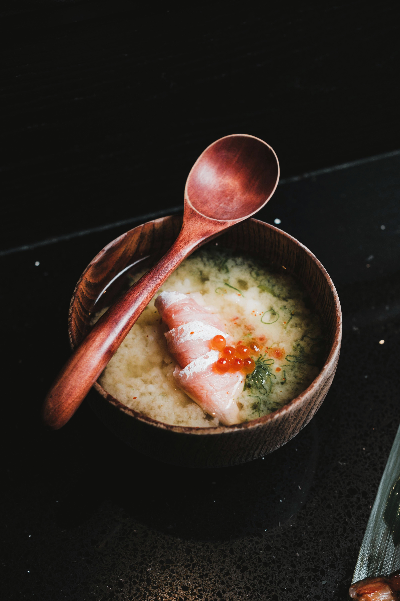

Home
Salmon Miso Soup with Ikura

Description
This comforting Japanese miso soup combines the savory depth of miso paste with tender salmon and the briny pop of salmon roe (ikura).
The soup is light yet full of umami, making it perfect as a starter or a light meal. Green onions add freshness, while the roe provides
a burst of flavor in each spoonful.
Quick to prepare and nourishing, this dish offers a balance of warmth and elegance, bringing together traditional Japanese ingredients
with a touch of luxury.
Ingredients
- 4 cups dashi (Japanese soup stock)
- 3 tbsp white miso paste
- 200 g fresh salmon fillet, sliced
- 2 tbsp wakame seaweed (rehydrated if dried)
- 2 green onions, thinly sliced
- 2 tbsp salmon roe (ikura)
- Pinch of shichimi togarashi (optional, for heat)
Steps
- Heat dashi in a medium pot until steaming but not boiling.
- Place miso paste in a small bowl, add a ladleful of hot dashi, and whisk until smooth. Stir back into the pot.
- Add salmon slices and cook gently for 2–3 minutes until just opaque and tender.
- Stir in wakame and green onions. Simmer lightly for another minute.
- Ladle soup into bowls. Top with salmon roe and a sprinkle of shichimi togarashi if using.
- Serve hot with a wooden spoon for an authentic touch.